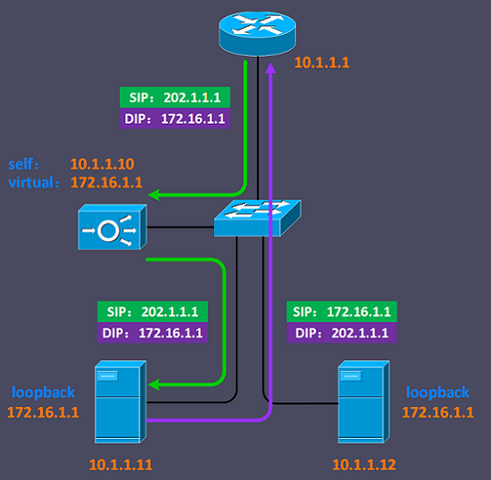
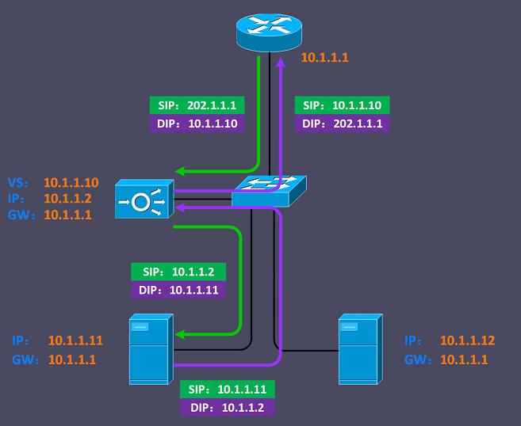
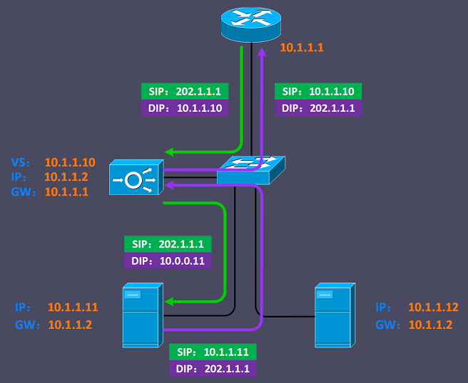

<!DOCTYPE html>
<html lang="zh">
<head>
	<meta charset="UTF-8">
	<meta http-equiv="X-UA-Compatible" content="IE=edge,chrome=1">
	<link rel="icon" href="../../../img/f5.svg" />
	<title>F5-LTM基本原理</title>
	<script src="../../../js/public/head.js"></script>
	<script type="text/javascript">
		window.onload = createNavigation(ltm_basic);
	</script>
	<link rel="stylesheet" href="../../../css/private/ltm_basic.css">
</head>
<body>
	<div class="container-fluid">
		<div id="divCommand">
			<script type="text/javascript">
				createInstruT0("LTM基本概念","i1");
						createInstruT2("Node");
							createInstruAllTopT2("‘某台服务器（物理/虚拟）。，一般用IP地址标识");


						createInstruT2("<br />Pool");
							createInstruAllTopT2("一个或多个pool member的逻辑分组，‘一个pool代表一项应用。");
							createInstruAllTopT2("pool member一般用IP(域名):端口号标识，如：10.1.1.11:80");
							createInstruAllTopT2("负载均衡方式在pool中配置");


						createInstruT2("<br />Virtual Server");
							createInstruAllTopT2("‘由IP地址(域名)和端口号组合而成，用于监听客户端的请求。，只有端口号，不区分TCP/UDP，TCP/UDP在pool member中确定");
							createInstruAllTopT2("通常会引导流量到后台的应用pool池，并将目的地址和端口号转换为pool member地址和端口（源地址和端口不变）");
							createInstruAllTopT2("多个virtual server可以关联多个pool");


				createInstruT0("<br />组网方案","i2");
					createInstruT1("旁挂（单臂）部署","i2-1");
						createInstruT2("三角传输（nPath）模式","i2-1-1");
							var txt = `
								<div class="divConfigImgT2" id="npath">
									<div>
										
									</div>

									<div>
										<span>BGP-IP LTM进行请求转发时，只改变数据包的目的MAC地址</span>
										<span>每台服务器上需要配置loopback接口，与LTM上的虚拟服务器IP地址相同，服务器需要将应用绑定在该lookback接口上</span>
									</div>

									<div>
										<span>　</span>
										<span>此方案为最原始方案，几乎不使用</span>
										<span>在一个典型的HTTP应用网站中，上传和下载的比例超过1:10（如视频网站），用户提交很少量的请求，服务器就可返回大量数据，可以采用此方案</span>
										<span>主要问题为服务器配置复杂，且流量只有请求经过LTM，LTM的功能受限，同时还造成来回路径不一致，增加了排错管理等问题的复杂性</span>
									</div>
								</div>
							`;
							document.writeln(txt);

						document.write("<br style='clear:both' /><br /><br />")
						createInstruT2("SNAT模式","i2-1-2");
							txt = `
								<div class="divConfigImgT2" id="snat">
									<div>
										
									</div>

									<div>
										<span>SNAT模式一般只用于现有网络结构无法改变的环境</span>
									</div>

									<div>
										<span>　</span>
										<span>由于改变了服务器接收到请求的源地址，不利于对源地址进行统计审计等需要真实原地址的应用</span>
										<span>可以在LTM设置相应策略，把请求的原始地址加入HTTP头部中的字段（X-Forwarded-For）中</span>
									</div>
								</div>
							`;
							document.writeln(txt);

						document.write("<br style='clear:both' /><br /><br />")
						createInstruT2("网关模式","i2-1-3");
							txt = `
								<div class="divConfigImgT2" id="gw">
									<div>
										
									</div>

									<div>
										<span>服务器的网关改为LTM的地址即可</span>
										<span>该方案是结合上述两方案而成方案，对网络的影响最小</span>
										<span>该方案最不可靠的方法，因为服务器的所有流量均经过LTM，服务器上会有不需要负载均衡的流量（如管理流量），会带来大量问题</span>
									</div>
								</div>
							`;
							document.writeln(txt);

				document.write("<br style='clear:both' /><br /><br />")
				createInstruT0("负载均衡方式","i3");
						createInstruT2("基于 Node / Member 区别","i3-1");
							createInstruAllTopT2("一个节点可能向外提供多个服务");

							createInstruAllTopT2("Node：　　&nbsp;考虑该节点的所有服务的情况");

							createInstruAllTopT2("Member：只考虑某个节点的某项服务的情况");

						createInstruT2("<br />Round Robin：<span class='lb'>轮巡</span>","i3-2");
							createInstruAllTopT2("请求量很大、服务器性能相近时，应采用的办法，使用高级算法时，计算节点消耗过大");


						createInstruT2("<br />Ratio(member/node)：<span class='lb'>比例</span>","i3-3");
							createInstruAllTopT2("服务器有明显差距时使用");


						createInstruT2("<br />Dynamic Ratio(member/node)：<span class='lb'>动态比例</span>","i3-4");
							createInstruAllTopT2("需要在服务器安装LTM的插件，根据获取服务器的情况，计算节点");


						createInstruT2("<br />Fastest(node/application)：<span class='lb'>最快速</span>","i3-5");
							createInstruAllTopT2("计算的响应速度，服务器存在本地、远端两种时使用");


						createInstruT2("<br />Least Connections(member/node)：<span class='lb'>最小连接</span>","i3-6");


						createInstruT2("<br />Weighted Least Connections(node/node)：<span class='lb'>基于权重的最小连接</span>","i3-7");
							createInstruAllTopT2("计算权重： 当前连接和连接限制的比重，越小，连接越多");


						createInstruT2("<br />Ratio Least Connections(member/node)：<span class='lb'>基于比例的最小连接</span>","i3-8");
							createInstruAllTopT2("计算权重： 当前连接和比例的比重，越小，连接越多，一般推荐方案");


						createInstruT2("<br />Observed(member/node)","i3-9");
							createInstruAllTopT2("根据上一秒的连接数，反向连接");


						createInstruT2("<br />Predictive(member/node)","i3-10");
							createInstruAllTopT2("私有方式，通过一定算法，计算向某个服务器连接");


						createInstruT2("<br />Least Sessions：<span class='lb'>最小会话</span>","i3-11");

			</script>
		</div>
	</div>
</body>
</html>